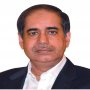

Message of the Chairman, Board of Trustees 
With a humble beginning in 2002 and a mere 107 students, Southeast University (SEU) has become one of the most successful universities in the country, having the highest number of student enrolment, permanent campus coupled with state-of-the-art facility and above all, a centre of transcendence.
In many ways, SEU has been distinct from day one, facilitating the scope of higher education for emerging middle class, while continually thrusting for improvement and focusing on the future with a philanthropic fortitude.
For more than a decade, SEU has been the destination of talented academicians, scholars and students, having the impetus to teach, perform, create, learn and study. Amidst an astonishing diversity of programs, exploration of innovative ideas, pursuance of new knowledge and art, our classrooms are filled with vibrancy that comes from being an academy committed to research, discovery, creativity and dynamic intellectual exchange.
We take pride to be an educational institution which nurtures individual excellence and community well-being.
Mr. Md. Rezaul Karim
Chairman, Board of Trustees
Southeast University Trust
Message from Vice Chancellor 
Prospective Students, Greetings from Southeast University !
First, let me introduce Southeast University (SEU) to you. SEU started its journey in 2002 with only 107 students enrolled in 5 different departments which is now with around 12000 students in 3 Schools 10 Departments and 19 Programs. More than 30,000 students have already graduated from this university since its inception. You will be happy to know that since its inception, the founders of Southeast University (SEU) emphasized that education was not to be treated as a commercial commodity. They established the University as a purely non-profit institution. Every single penny from your tuition fees in excess of operating cost is invested for the expansion of the university and enhancement of quality of education.
On several counts SEU is different. You may have known that most of the private universities are moving out of Dhaka city, whereas our permanent campus is located at Tejgaon, the heart of the Capital city of Dhaka. Our campus is quite spacious with all amenities available for a world class modern university.
In terms of credentials, the university has a long history of achievements. You will be glad to know that out of 10 departments of Southeast University, two Departments have been graded as ‘Excellent’ and remaining 8 departments as “Very good” by External Peer Review Team of HEQEP (Higher Education Quality Enhancement Project), a project funded by World Bank executed by Ministry of Education through UGC.
This is further to let you know that all of our science programs are accredited. Our Department of Textile Engineering is internationally reputed and our textile graduates are being well-placed in the world market. Our Architecture, Pharmacy, Computer Science & Engineering, Business and Law & Justice Departments are highly reputable in the market.
You will be very glad to know that meanwhile Southeast University has improved its local ranking amongst private universities from 19th position in 2017 to 12th in 2019 and 5th position in Research, and endeavoring to go ahead in the coming years to transform Southeast University as World Class University by 2030. May Almighty Allah accept our efforts !
Finally, I like to welcome you to Southeast University. I strongly believe that Southeast University would be the right choice to develop your career.
Prof. Dr. AFM Mafizul Islam
Vice Chancellor, Southeast University.